Github Tutorial
Step Wise Guide
Step 1: Open your Repositories in Github Account and click New
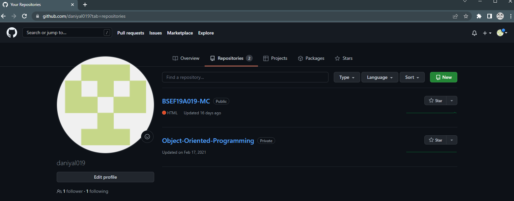
Step 2:Name Your Repository and make it public
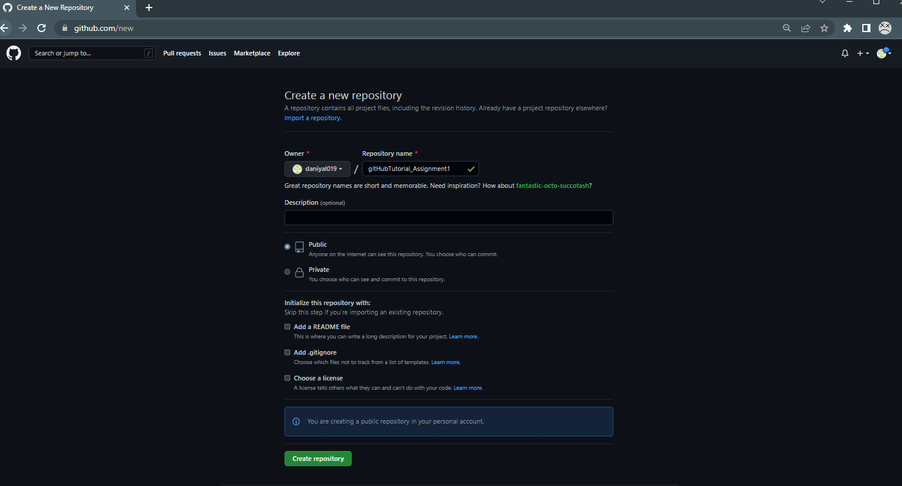
Step 3:Repository Created
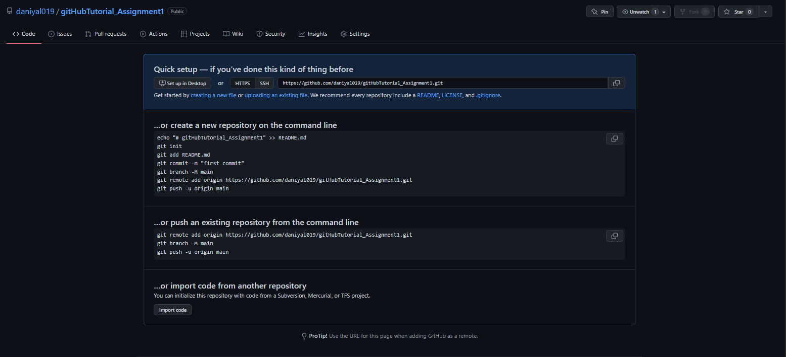
Step:4 Create a New Folder and create required files in it
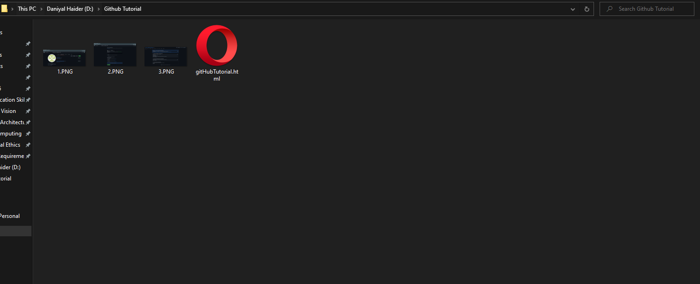
Step:5 Type cmd in search bar, it will open command prompt in that directory
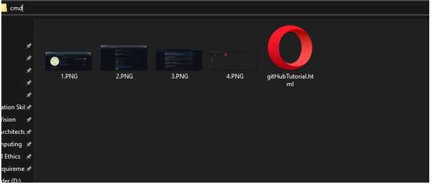
Step:6 Command prompt opened in that directory
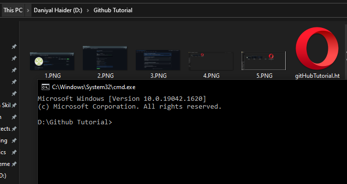
Step:7 Initialize an empty Git Repository in your directory using git command "git init"
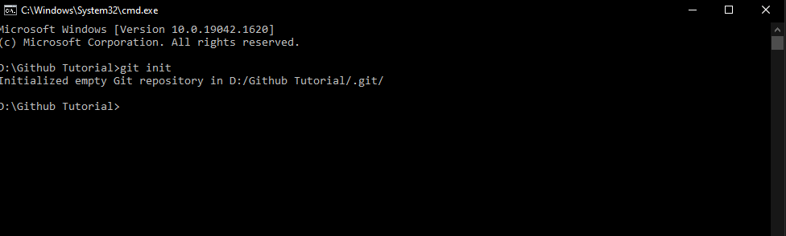
Step:8 Check your directory if an hidden git folder has been created or not
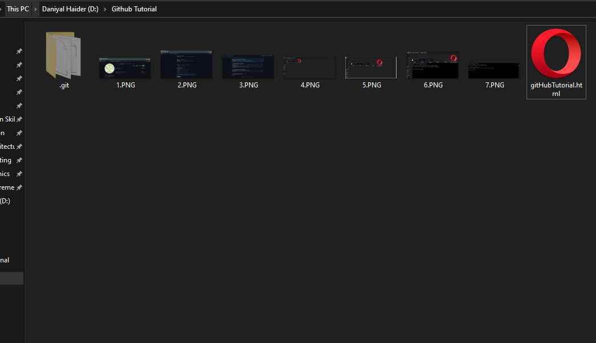
Step:9 Check status of git Repository using command "git status"
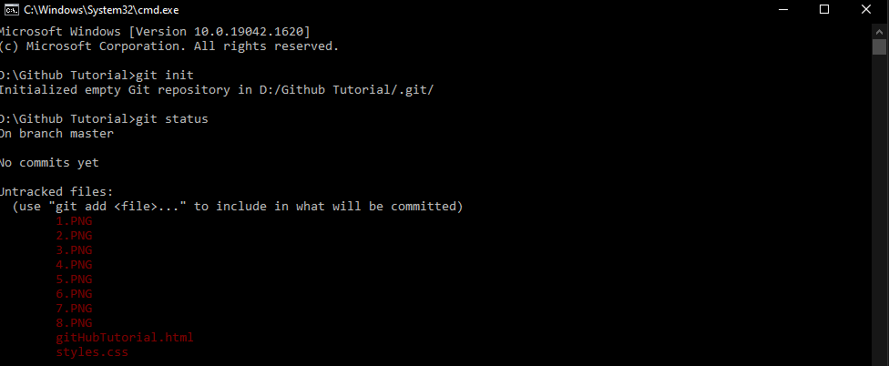
Step:10 Add a file into Repository using gitCommand "git add filename.extension"
Step:11 Check status of git Repository using command "git status", now 1 file is tracked which was added previously
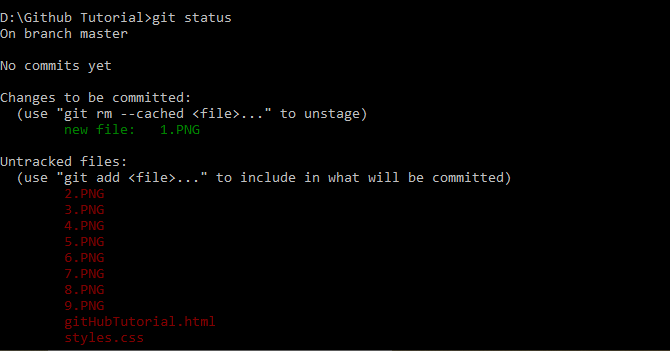
Step:12 Commit whenver Repository is modified using gitCommand git commit -m "comment"
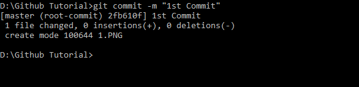
Step 13:Copy Link of Repository from your online Github Account
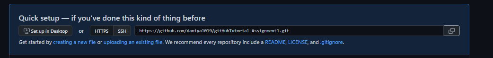
Step 14:Connect Online and Local Repository using gitCommand git branch -M main
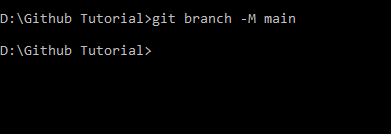
Step 15: Add origin of Online Repository using gitCommand git remote add origin "repositoryLink"
Step 16: Push your files from Local Repository to Online Repository using gitCommand git push -u origin main
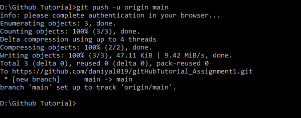
Step 17: Check your Online Repository to find your Commited File
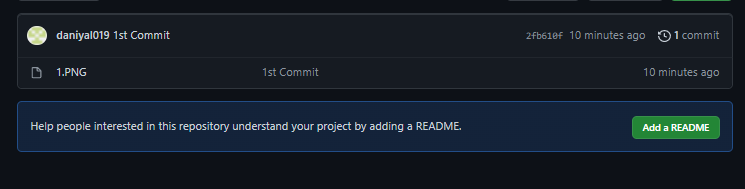
Step 18: Now start adding Other Files and commit simultaneosly
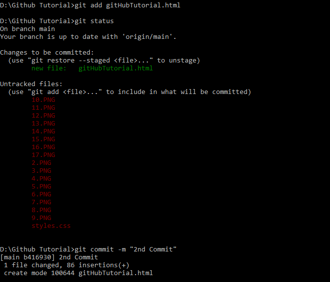
Step 19: Push once Committed
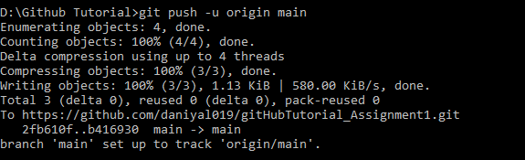
Step 20: Now Add other files and Comitt
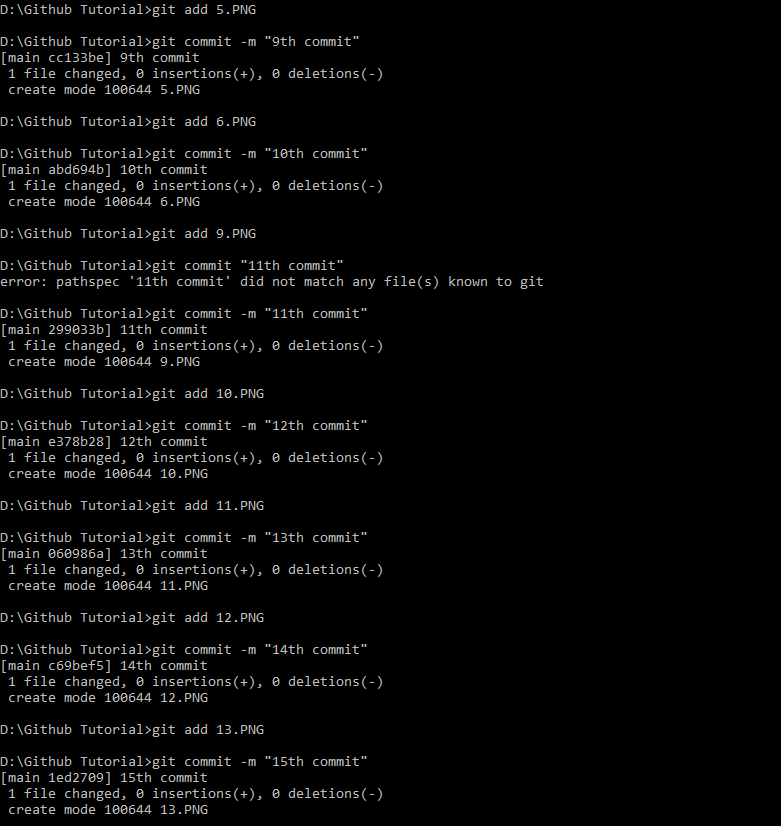
Step 21: Check status and push into Online Repository
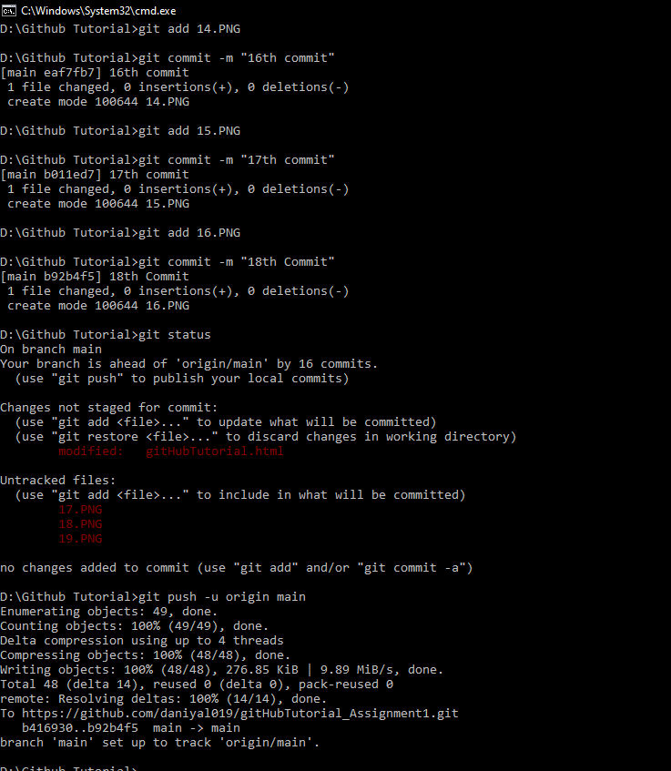
Step 22: Check Online Repository to view committed files
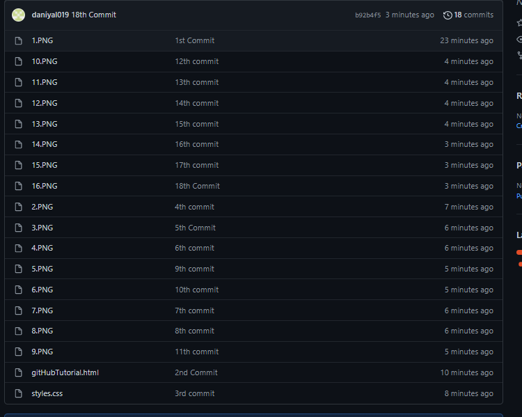
Step 23: Use gitCommand git add . to add all untracked files into repository and check status
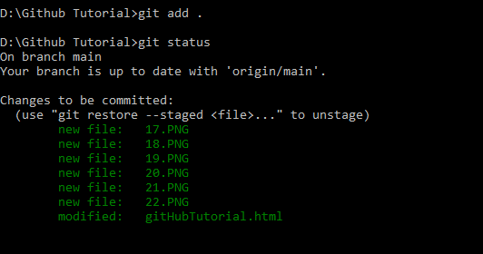
Step 24: Commit and Push all new files
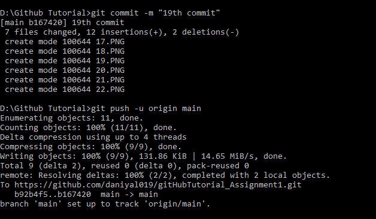
Step 25: Check Online Repository to view committed files
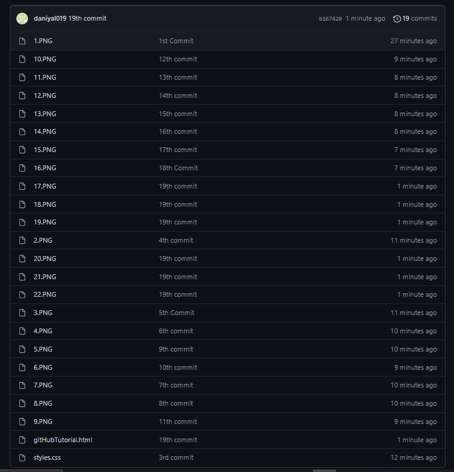
Success: All Files Committed from Local repository to Online Repository